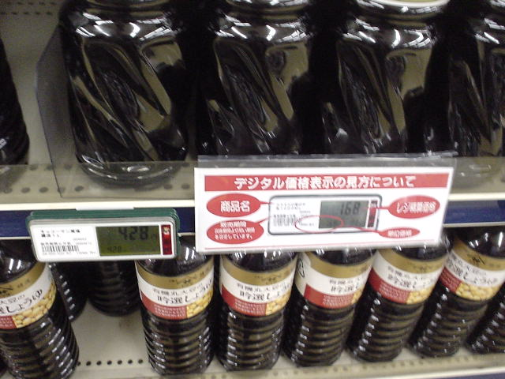

前の写真
2003-06-17
次の写真
最新型値札？

撮影日時: 2003-06-17 19:24:48
カスミに寄ったら、新しい値札に変えているところだった。
以前の紙製のものよりも変更が容易なのかな？
客の立場からすると、液晶画面はすごく見辛いので、以前のモノの方がずっと良いんだけどなあ。
前の写真
2003-06-17
次の写真
高久雅生 (Takaku Masao)
http://nile.ulis.ac.jp/~masao/
,
masao@ulis.ac.jp